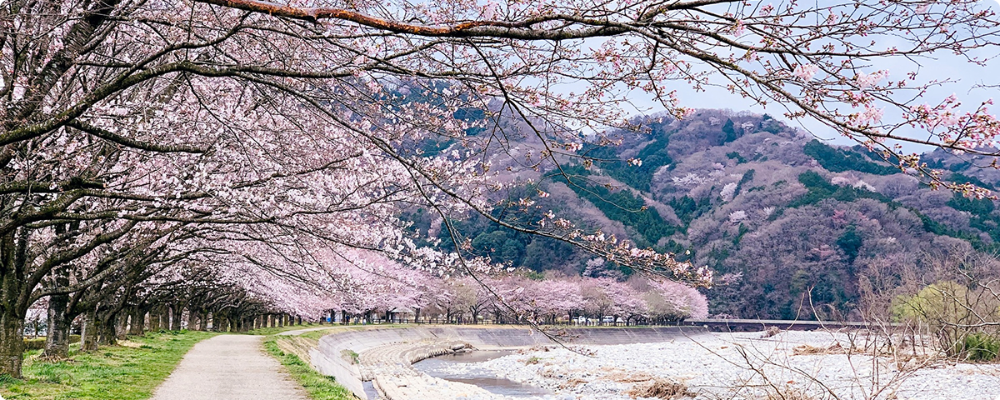
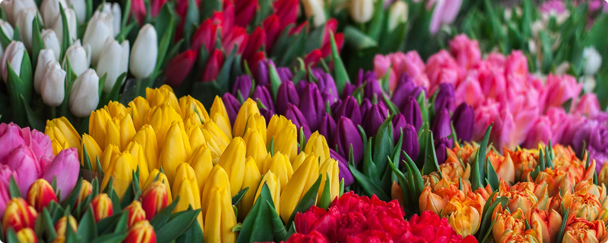

Spring is a wonderful time of year to travel, as the weather begins to warm up and nature bursts into bloom. With the changing of seasons, many destinations around the world come alive with vibrant colors and new life, making it a perfect time to explore and immerse yourself in the beauty of the season.

One of the best places to travel to in the spring is Japan. Known for its stunning cherry blossoms, Japan is a must-visit destination during this time of year. The cherry blossoms, or sakura as they are known in Japanese, typically bloom in late March to early April, creating a magical and fleeting display of pink and white petals across the country.
Aside from the cherry blossoms, Japan has a lot to offer in the spring. The weather is mild and pleasant, making it a great time to explore the country's historic temples and lush gardens. You can also experience traditional tea ceremonies, visit vibrant markets, and indulge in delicious Japanese cuisine.

Another fantastic spring destination is the Netherlands. Known for its iconic tulip fields, the Netherlands is a colorful and picturesque country to visit in the spring. The famous Keukenhof Gardens, located just outside of Amsterdam, are a must-see attraction during the spring months.
Aside from the tulip fields, the Netherlands offers charming cities and towns to explore, such as Amsterdam, with its picturesque canals and world-class museums, and Utrecht, with its historic old town and lively cafe culture.
If you're looking for a more exotic spring destination, consider visiting Morocco. While most people associate Morocco with its famous deserts and bustling markets, the country is also a great place to visit in the spring. With temperatures warming up but not yet unbearable, spring is an ideal time to explore Morocco's diverse landscapes and vibrant cities.
No matter where you choose to travel in the spring, be sure to take advantage of the season's mild weather and new life around you. Spring is a wonderful time to travel and experience the beauty of the world around you.